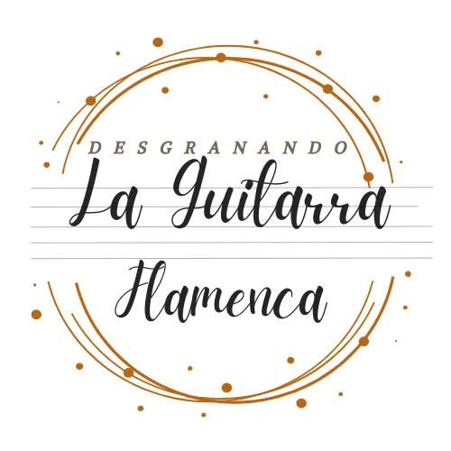
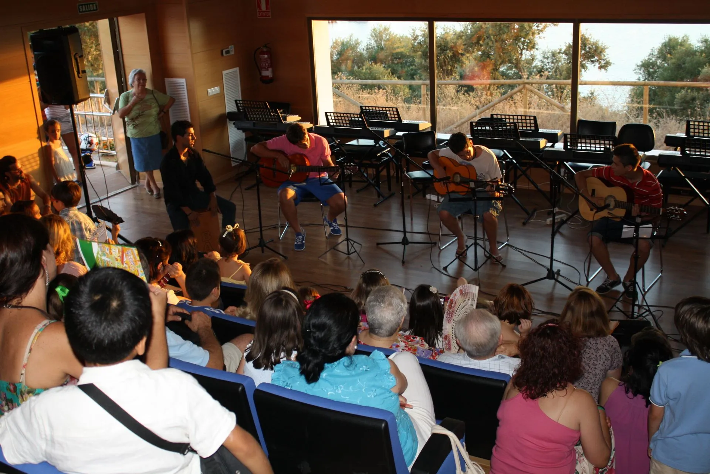
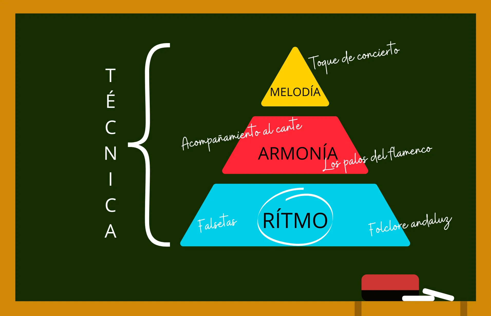
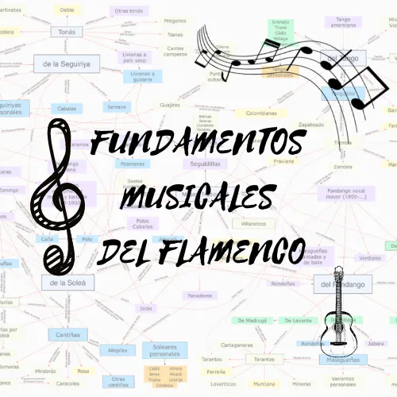
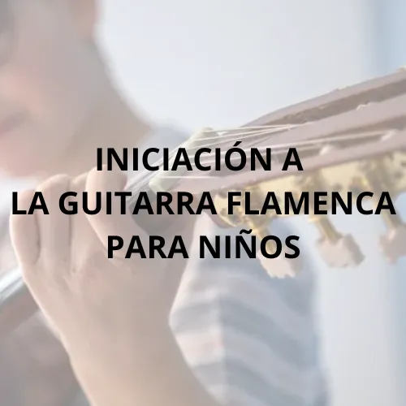
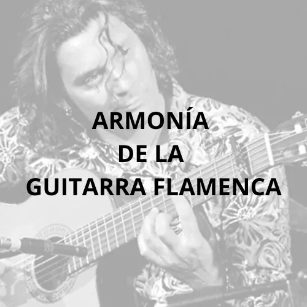
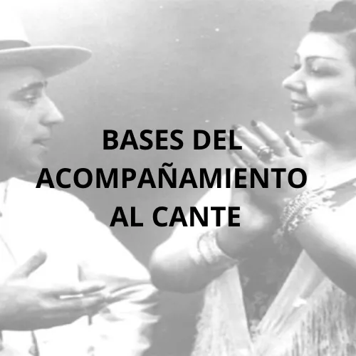
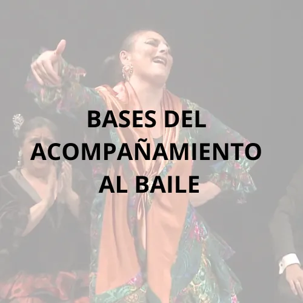

Pasión por la enseñanza del flamenco
Bienvenido
FUNDAMENTOS MUSICALES DEL FLAMENCO
Nuevo curso
Blog
En construcción...
Nuestros cursos online
Desde nuestra plataforma e-learnig podrás acceder a todos nuestros contenidos para estar siempre al día
El flamenco es tradición oral y actualidad académica, por eso nuestro método parte del origen y llega hasta nuestros días. El conocimiento y la experiencia enfocado en el individuo, desde la pureza y la hibridación para utilizar la música flamenca como medio para elevar al individuo a un nivel superior en el que la música es un fin.
Innovación metodológica desde la esencia del flamenco
Cursos y talleres
Entrar Entrar Entrar Entrar EntrarEN CUALQUIER LUGAR
Nos desplazamos a cualquier punto de la geografía española
Más información
VERSATILIDAD
Trabajamos para ofrecer conciertos, talleres y cursos para todo tipo de auditorio
Más información
Cercanía
Nuestra mayor satisfacción es crear vínculos de enseñanza con nuestros alumnos.
Más información
Vocación
Nos apasiona lo que hacemos, por eso lo disfrutamos cada momento del proceso de enseñanza.
Más información
Vídeos
Imágenes y materiales del proyecto







